Chapter 4. 퍼셉트론(Perceptron)¶
1절. 신경망¶
퍼셉트론¶
- 1957년 프랑크 로젠블라트가 고안한 신경망의 기원이 되는 알고리즘
- 인공 뉴런으로 다수의 신호를 입력으로 받아 하나의 신호를 출력하는 것
컴퓨터 vs 인공신경망¶
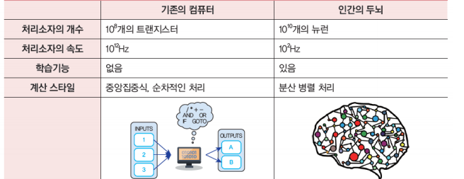
신경망 장점¶
- 학습이 가능
- 데이터만 주어진다면 예제로부터 배울 수 있음
- 몇 개의 소자가 오동작하더라도 전체적으로는 큰 문제 발생 X
신경망 분야¶
- 인간이 인식할 수 있는 이미지 클래스가 존재하는 분야
- 만약, 인간도 인식의 메커니즘을 모른다면?
- 인식 알고리즘 제작 불가능
뉴런을 사용한 논리 연산¶
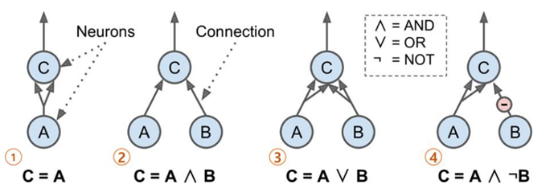
- ① 항등함수를 의미
- 뉴런 A가 활성화될 경우 뉴런 C도 활성화
- ② 논리곱 연산을 의미
- 뉴런 A와 B가 모두 활성화될 경우 뉴런 C 활성화
- ③ 논리합 연산 의미
- 뉴런 A와 B 둘 중 하나라도 활성화될 경우 뉴런 C 활성화
- ④ 어떤 입력이 뉴런의 활성화를 억제할 수 있다고 가정
- 위의 그림처럼 뉴런 A가 활성화되고 뉴런 B가 비활성화일 경우 뉴런 C 활성화
퍼셉트론(Perceptron)¶
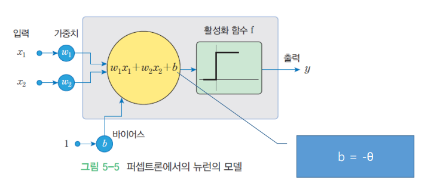
- 1957년에 로젠블라트(Frank Rosenblatt)가 고안한 인공 신경망
- 신호
- 두 가지 종류
- 흐른다 - 1
- 흐르지 않는다 - 0
- 입력 신호 : \(x_1\), \(x_2\)
- 출력 신호 : \(y\)
- 가중치
- 입력 신호가 결과 출력에 주는 영향도를 조절하는 매개 변수
- \(w_1\), \(w_2\)(w => weight의 머리글자)
- 퍼셉트론에서는 가중치가 클수록 강한 신호 흘림
- 전류에서 말하는 저항 : 저항이 낮을수록 큰 전류의 흐름
- 뉴런, 노드 : x1, x2, y
- 편향(bias)
- 뉴런(또는 노드 : x를 의미)이 얼마나 쉽게 활성화(1로 출력 : activation)되는지를 조정(adjust)
- 입력 신호가 뉴런에 보내질 때 각각 고유한 가중치의 곱
- ex) w1 _ x1, w2 _ x2
- 뉴런 활성화
- 뉴런에서 보내온 신호의 총합이 정해진 한계를 넘어설 경우에만 1 출력
- 한계를 넘어서지 못할 경우 0 출력
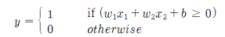
- 임계값
- 정해진 한계
- 세타 기호로 표현
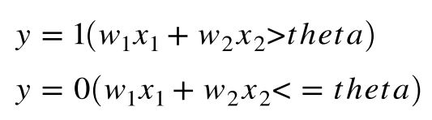
퍼셉트론의 논리 연산¶
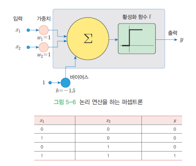
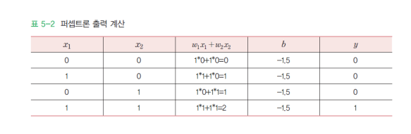
2절. 활성화 함수¶
계단 함수¶
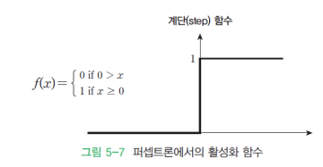
퍼셉트론 학습 알고리즘¶
- 학습 : 신경망이 스스로 가중치를 자동 설정하는 알고리즘이 필요하며 퍼셉트론에서도 존재
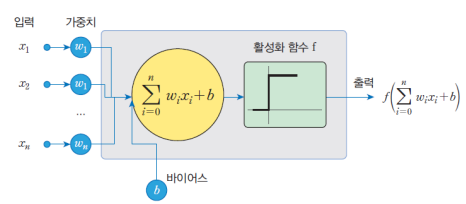
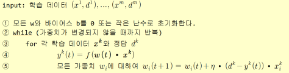
논리 연산자 학습 과정¶
-
퍼셉트론이 1을 0으로 잘못 식별한 경우
-
가중치의 변화량 = \(η * (1 - 0) * x_i^k\)
- 즉, 가중치는 증가
-
가중치가 증가할 경우 출력도 증가되어 출력이 0에서 1로 변할 가능성 존재
-
퍼셉트론이 0을 1로 잘못 식별한 경우
- 가중치의 변화량 = \(η * (0 - 1) * x_i^k\)
- 즉, 가중치는 감소
- 가중치가 감소할 경우 출력도 감소되어 출력이 1에서 0으로 변할 가능성 존재
3절. 논리 회로¶
AND 게이트¶
| \(x_1\) | \(x_2\) | \(y\) |
|---|---|---|
| 0 | 0 | 0 |
| 0 | 1 | 0 |
| 1 | 0 | 0 |
| 1 | 1 | 1 |
- AND 함수(1)
def AND(x1, x2):
w1, w2, theta = 0.5, 0.5, 0.7
tmp = x1*w1 + x2*w2
if tmp <= theta:
return 0
elif tmp > theta:
return 1
- AND 함수(2)
def AND(x1, x2):
x = np.array([x1, x2])
w = np.array([0.5, 0.5])
b = -0.7
tmp = np.sum(w*x) + b
if tmp <= 0:
return 0
else:
return 1
- AND 함수 예시
OR 게이트¶
| \(x_1\) | \(x_2\) | \(y\) |
|---|---|---|
| 0 | 0 | 0 |
| 0 | 1 | 1 |
| 1 | 0 | 1 |
| 1 | 1 | 1 |
- OR 함수
def OR(x1, x2):
x = np.array([x1, x2])
w = np.array([0.5, 0.5])
# AND와는 가중치(w와 b)만 상이
b = -0.2
tmp = np.sum(w * x) + b
if tmp <= 0:
return 0
else:
return 1
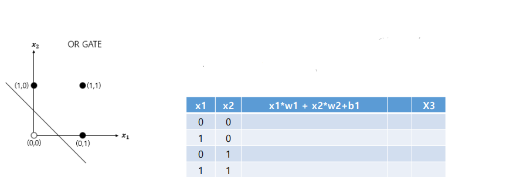
NAND 게이트¶
| \(x_1\) | \(x_2\) | \(y\) |
|---|---|---|
| 0 | 0 | 1 |
| 0 | 1 | 1 |
| 1 | 0 | 1 |
| 1 | 1 | 0 |
- NAND 함수
def NAND(x1, x2):
x = np.array([x1, x2])
w = np.array([-0.5, -0.5])
# AND와는 가중치(w와 b)만 상이
b = 0.7
tmp = np.sum(w * x) + b
if tmp <= 0:
return 0
else:
return 1
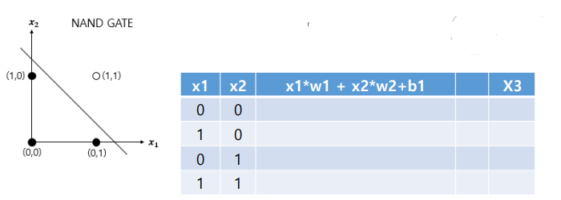
퍼셉트론의 한계 - XOR¶
- 선형과 비선형 출력의 한계
- 직선의 영역은 선형 영역, 곡선의 영역을 비선형 영역이라고 함
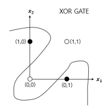
- 다층 퍼셉트론의 필요성
- 단층 퍼셉트론(Single-Layer Perceptron : SLP)으로는 XOR 게이트 표혀 불가
- 비선형 영역 분리 불가능
- 다중 퍼셉트론(Muti-Layer Perceptron) :
- 퍼셉트론의 층을 하나 더 쌓은 형태
- XOR을 층 하나 더 쌓아 표현
기존 게이트 조합¶
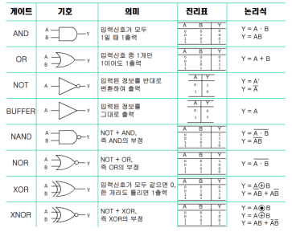
XOR 게이트의 표현¶
| \(x_1\) | \(x_2\) | \(s_1\) | \(s_2\) | \(y\) |
|---|---|---|---|---|
| 0 | 0 | 1 | 0 | 0 |
| 0 | 1 | 1 | 1 | 1 |
| 1 | 0 | 1 | 1 | 1 |
| 1 | 1 | 0 | 1 | 0 |
- XOR 함수 = (NAND 함수 + OR 함수 + AND 함수)의 사용
def XOR(x1, x2):
s1 = NAND(x1, x2)
s2 = OR(x1, x2)
y = AND(s1, s2)
return y
print(XOR(0, 0))
# 0
print(XOR(1, 0))
# 1
print(XOR(0, 1))
# 1
print(XOR(1, 1))
# 0
4절. 다층 퍼셉트론(MLP)¶
논리 회로의 퍼셉트론 형태¶
- 단층 퍼셉트론
- 입력층과 출력층만 존재
- 예시
- AND 회로
- OR 회로
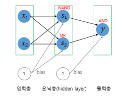
- 다층 퍼셉트론
- 2층 퍼셉트론
- 0층의 두 뉴런이 입력 신호를 받아 1층의 뉴런으로 신호 전송
- 1층의 뉴런이 2층의 뉴런으로 신호 전송한 후 2층의 뉴런은 이 입력 신호를 바탕으로 y 출력
- 예시
- XOR 회로
- 중간에 층(은닉층)이 하나 추가됨
다층 퍼셉트론(Multi-Layer Perceptron)¶
- 은닉층이 1개 이상인 퍼셉트론
- XOR 문제보다 복잡한 문제를 해결하기 위해 중간에 수많은 은닉층 추가
- 은닉층이 2개 이상이 신경망 : 심층 신경망(Deep Neural Network, DNN)
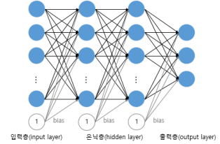
선형 분류 가능 문제¶
- 패턴 인식 측면에서 보면 퍼셉트론은 직선을 이용하여 입력 패턴을 분류하는 선형 분류자(Linear Classifier)의 일종
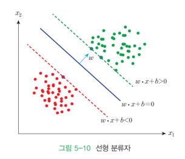
- 1개의 레이어로 구성된 퍼셉트론은 XOR 문제를 학습할 수 없음
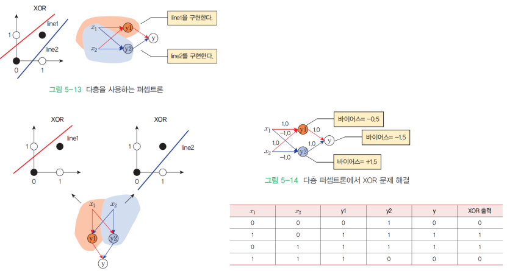